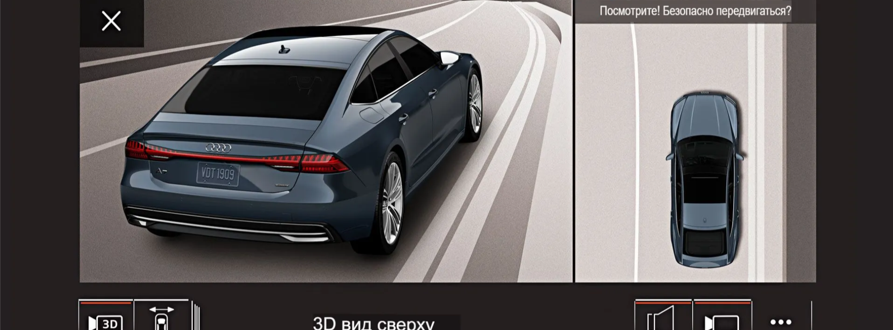
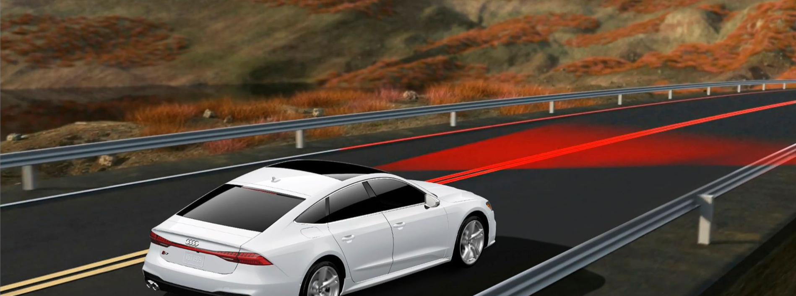

Система камеры вида сверху.
Увеличьте масштаб экстерьера вашего автомобиля с помощью системы камеры вида сверху Virtual 360. Переключайтесь между видами 3D—камеры и проводите пальцем по экрану, чтобы просматривать различные ракурсы - и все это, не выходя из водительского кресла.

Audi active lane assist с функцией экстренной помощи.
Audi active lane assist с функцией экстренной помощи отслеживает положение автомобиля и помогает вам придерживаться разметки с помощью рулевого управления. Если вы неактивны, управление берет на себя система экстренной помощи.